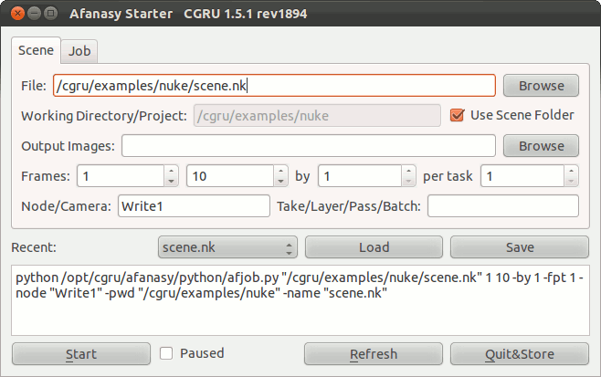
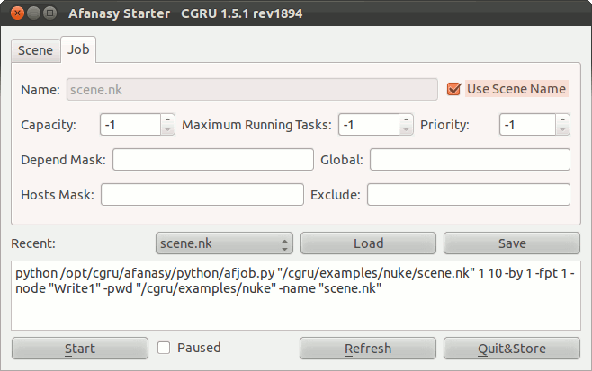

Afanasy Starter.
A dialog to submit a job to Afanasy.
Supported software:
- Adobe After Effects
- Autodesk 3D Studio Max
- Autodesk Maya
- Autodesk SoftImage XSI
- Blender
- SideFX Houdini
- HBatch (hython)
- Mantra (standalone)
- The Foundry Nuke
Scene Settings:

- File: Scene file path. IFD files sequence for Mantra.
- Working Directory/Project: Tasks process working folder, default is scene folder. Project path for Maya.
- Output Images: Some software allows to override output images in command line arguments.
- Frames: Frame range to render, 'by' - frames step or increment, 'per task' - number of frames in one task.
- Node/Camera:
Houdini ROP,
Nuke write node,
Max, Maya camera to render,
After FX composition.
- Take/Layer/Pass/Batch:
Houdini take,
SoftImage pass,
Maya layer,
Max batch to render,
After FX render settings template.
- Recent: Store recent sent jobs settings.
- Start: Submit job to Afanasy server. It can be started in off-line state ("paused").
Afanasy Job Settings:

- Name: Job name. By default scene file name is used.
- Capacity: Tasks capacity attribute value. '-1' means use the default.
- Priority: Job order in user jobs list.
- Maximum Running Tasks: Maximum number of tasks can be running at the same time.
- Depend Mask: Job(s) name pattern to wait to. Global: wait job(s) of any user.
- Hosts Mask: Host(s) name pattern to run on. Exclude: not to run on such hosts.
|